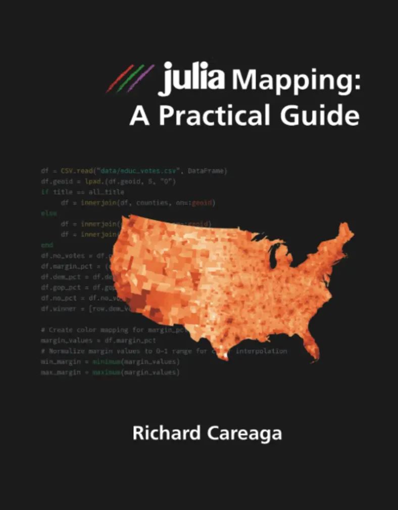

Julia Mapping
A practical guide to maps from data you already have, for people who are good at their own work and new to programming.

Who it's for
You have data with places in it
State, county or regional figures sitting in a spreadsheet, and a map you want that the tools you know make hard.
You're not a programmer
You need enough to make your maps, not to become a programmer. The book takes you from installation to a finished map with a minimum of heartache and confusion.
You want a clear, honest map
Thematic maps, bivariate and flow maps, cartograms and more, with restrained color and the reasons behind each choice.
Reading on a Kindle?
Maps are hard to read on a small e-ink screen. The figure gallery shows every figure from the book at full size, with its caption, so you can zoom in on a phone, tablet or monitor.
Watch
Short videos on mapping problems and how to solve them are on the JuliaMapping channel.